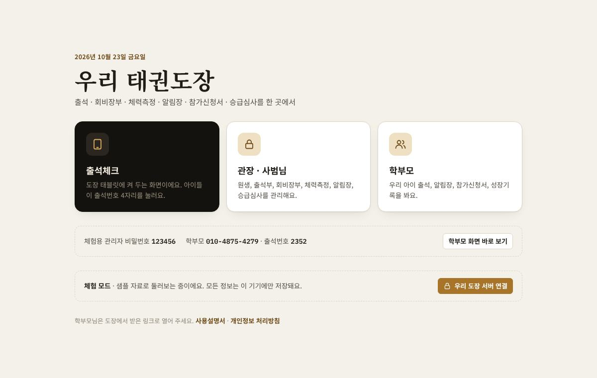
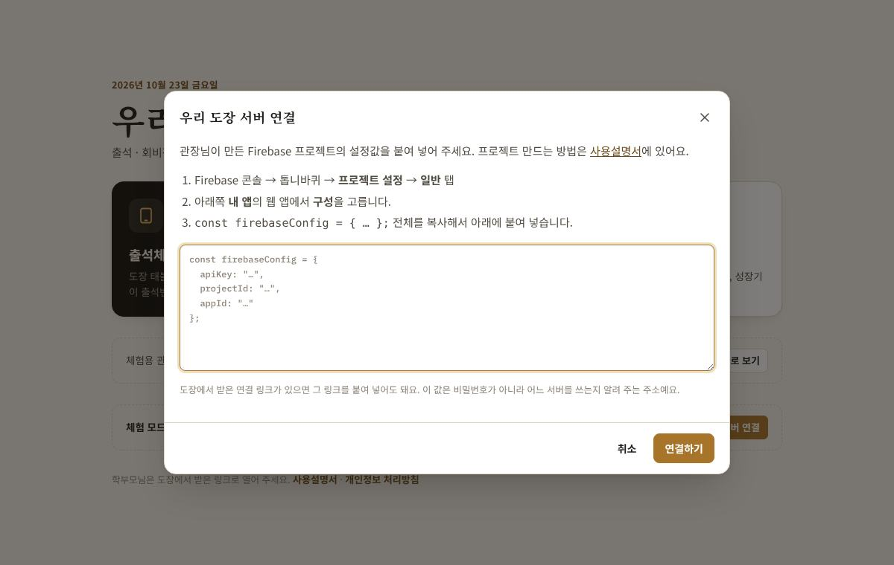
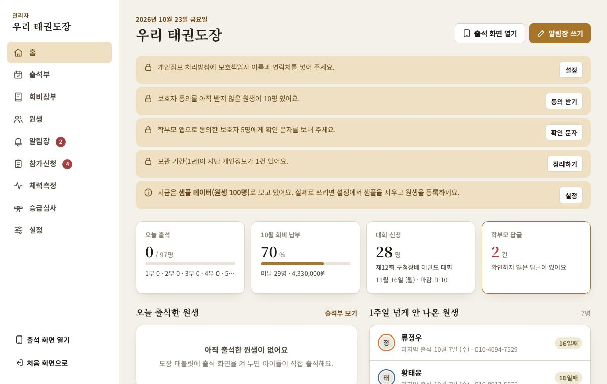
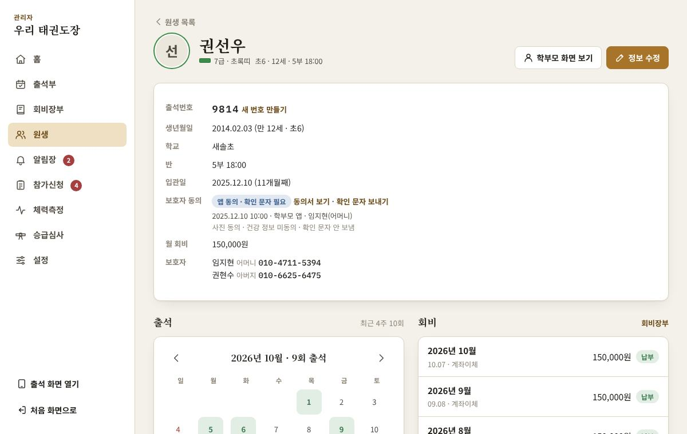
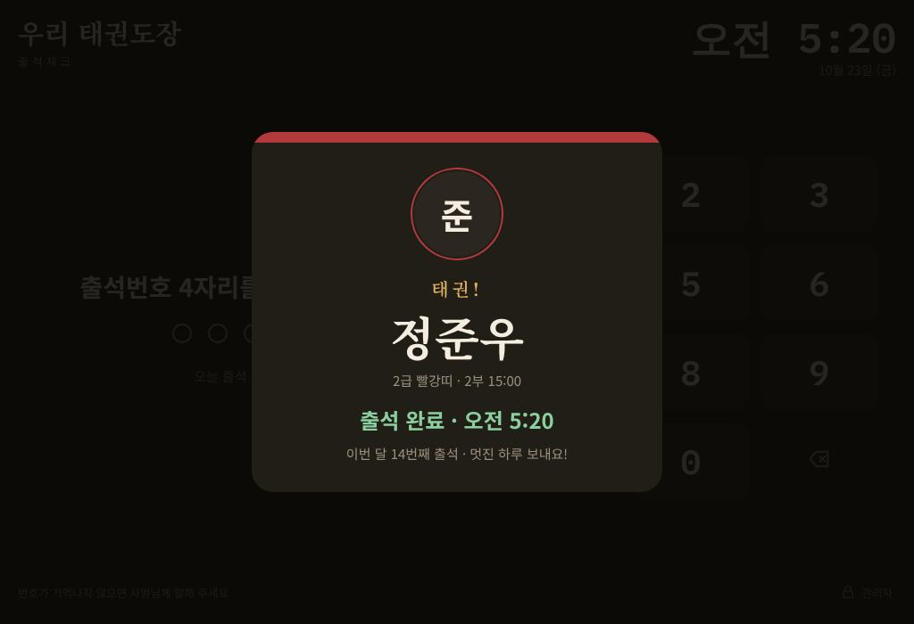
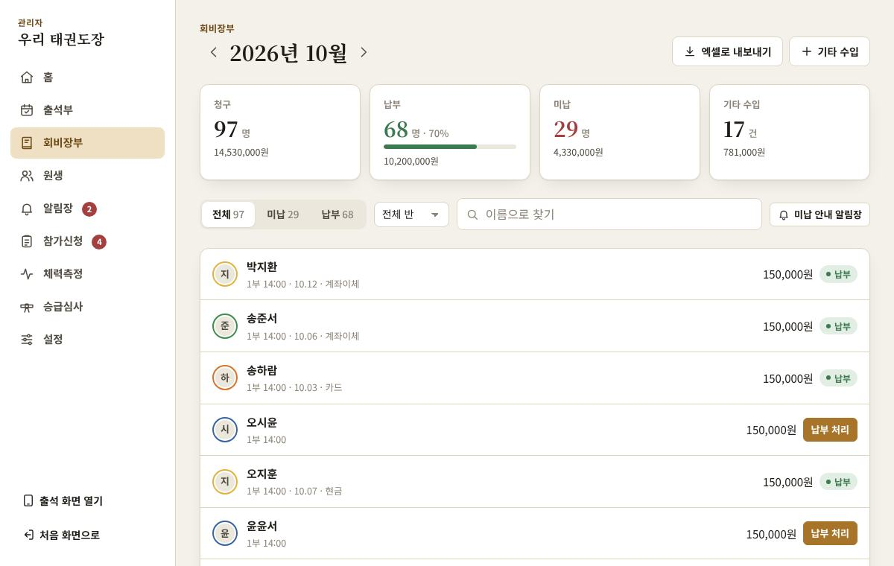
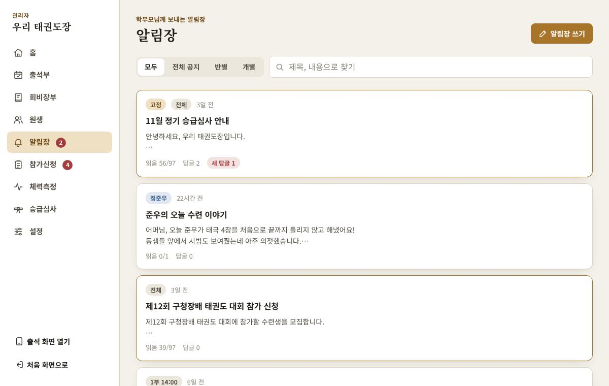
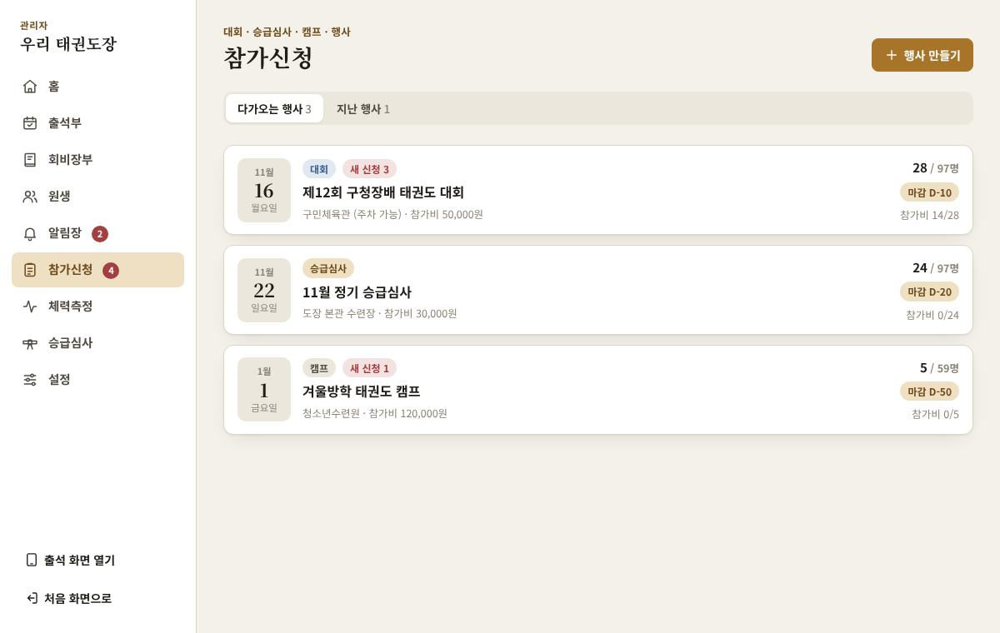
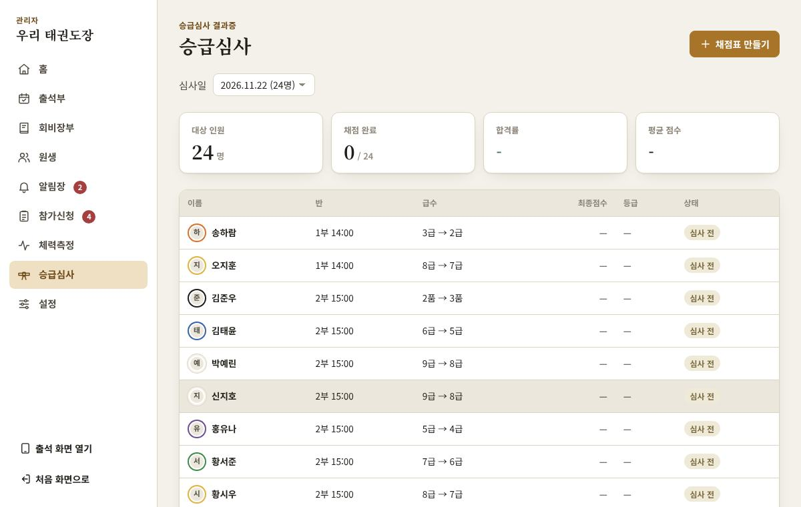
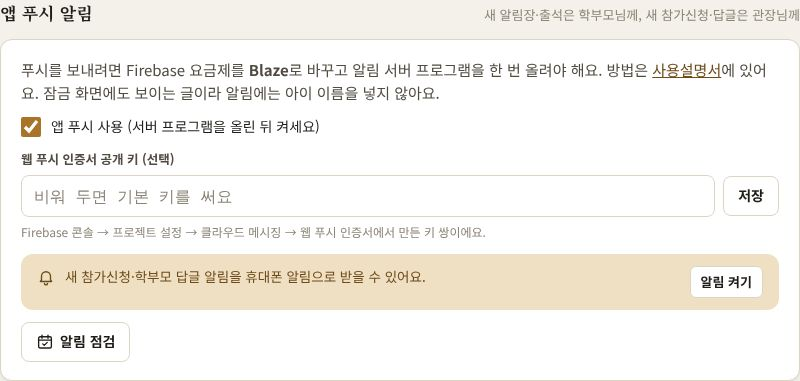

태권도 통합 관리 사용설명서
출석체크, 회비장부, 체력측정, 알림장, 참가신청서, 승급심사 결과증을 한 앱에서 관리해요. 처음 한 번 서버를 만들고 나면, 도장 태블릿·관장님 휴대폰·학부모님 휴대폰이 같은 자료를 봐요.
앱 주소 https://awoolimtkd.github.io · 최신 설명서 https://awoolimtkd.github.io/manual.html
도장 자료는 각 도장의 Firebase 서버에만 저장되고, 앱을 만든 사람은 볼 수 없어요. 프로그램 오류로 생긴 손해는 책임질 수 없으니 정기적으로 백업해 주세요.
01이 앱은요
- 설치 없이 크롬·사파리에서 주소로 열어요.
- 도장 자료는 관장님 구글 계정에 만드는 Firebase 서버(서울)에만 저장돼요. 앱을 만든 사람도, 다른 도장도 볼 수 없어요.
- 쓰는 사람은 셋이에요.
- 출석체크: 도장 태블릿에 켜 두면 아이들이 출석번호 4자리를 눌러요.
- 관장 · 사범님: 원생, 출석부, 회비장부, 알림장, 참가신청, 체력측정, 승급심사를 관리해요.
- 학부모: 도장이 보낸 초대 링크로 연결해서 우리 아이 출석, 알림장, 신청서, 성장기록을 봐요.
- 원생 100명 정도의 도장을 기준으로 만들었어요. 이 규모는 Firebase 무료 요금제 안에서 써요.
02체험 모드로 둘러보기
서버를 만들기 전에 샘플 자료로 먼저 써 볼 수 있어요.
앱 주소를 처음 열면 체험 모드예요. 샘플 원생 100명이 들어 있고, 모든 정보는 그 기기에만 저장돼요.
- 체험용 관리자 비밀번호는
123456이에요. - 학부모 화면 바로 보기로 학부모님이 보는 화면도 볼 수 있어요.
- 체험 모드에 입력한 자료는 서버를 연결할 때 같은 기기에서 서버로 옮길 수 있어요.

03우리 도장 서버 만들기
관장님이 한 번만 하면 돼요. 컴퓨터로 20분 정도 걸려요. Firebase 화면의 글자는 조금씩 바뀔 수 있어요.
3-1. 프로젝트 만들기
- Firebase 콘솔에 그 구글 계정으로 들어가요.
- Firebase 프로젝트 만들기(또는 프로젝트 추가)를 누르고 이름을 넣어요. 예:
우리태권도 - Google 애널리틱스는 사용 안 함으로 두고 만들어요. AI 도움 기능을 묻는 화면이 나오면 꺼도 돼요.
- 요금제는 처음 그대로 Spark(무료)예요. 카드를 등록하지 않으니 요금이 나올 수 없어요.
3-2. 로그인 방법 켜기
- 왼쪽 메뉴에서 Authentication을 찾아 시작하기를 눌러요. (안 보이면 빌드나 모든 제품 안에 있어요.)
- 로그인 방법 탭 → 이메일/비밀번호 → 첫 번째 스위치만 켜고 저장해요. 관장·사범님 로그인용이에요.
- 새 제공업체 추가 → 익명 → 켜고 저장해요. 학부모님 기기 연결용이고, 이름이나 전화번호는 여기에 저장되지 않아요.
3-3. 데이터베이스 만들기 (서울)
- 왼쪽 메뉴 Firestore Database → 데이터베이스 만들기
- 버전은 Standard, 데이터베이스 ID는
(default)그대로 둬요. - 위치는 asia-northeast3 (Seoul)을 골라요.
- 프로덕션 모드로 만들어요. 처음에는 아무도 못 읽게 잠겨 있다가, 4장에서 보안 규칙을 붙여요.
3-4. 웹 앱 등록하고 설정값 복사하기
- 왼쪽 위 톱니바퀴 → 프로젝트 설정 → 일반 탭
- 아래쪽 내 앱에서 웹 아이콘
</>을 눌러요. 앱 닉네임은태권도 관리처럼 넣고, Firebase 호스팅은 체크하지 않아요. - 앱 등록을 누르면
const firebaseConfig = { … };가 나와요. 이 부분 전체를 복사해서 메모장에 붙여 두세요.
다시 보려면같은 화면의 내 앱 → SDK 설정 및 구성 → 구성에 있어요. 이 값은 비밀번호가 아니라 "어느 서버인지" 알려 주는 주소라서, 학부모님께 가는 링크에도 들어가요. 실제 보호는 보안 규칙이 해요.
3-5. 개인정보 설정
- 프로젝트 설정 → 데이터 개인정보 보호 탭에서, Firebase 밖의 다른 Google 서비스와 데이터를 공유하는 항목은 꺼 두세요.
- Google의 데이터 처리 약관은 Firebase를 쓰면 함께 적용돼요. 앱의 개인정보 처리방침에는 Google에 처리를 맡긴다는 내용(위탁)이 이미 들어 있어요.
04앱 연결과 관리자 계정
컴퓨터의 크롬에서 이어서 해요.
4-1. 서버 연결
- 앱을 열고 시작 화면의 우리 도장 서버 연결을 눌러요.
- 3-4에서 복사한
firebaseConfig전체를 붙여 넣고 연결하기를 눌러요.

4-2. 관리자 계정 만들기
- 관장 · 사범님 → 처음이에요 · 관리자 계정 만들기
- 이메일과 비밀번호(6자 이상)를 정해요. 구글 계정 비밀번호와는 다르게 정하세요.
- 메일함에 온 인증 메일의 링크를 누르고, 앱으로 돌아와 인증 확인을 눌러요. 메일이 없으면 스팸함을 확인하세요.
4-3. 보안 규칙 붙이기
앱이 서버 보안 규칙 붙이기 화면을 보여 줘요. 관장님 이메일이 이미 들어 있어요. 이 규칙이 "관장님 이메일만 관리자, 학부모님은 자기 아이 정보만"을 지켜요.
- 앱에서 규칙 복사
- Firebase 콘솔 Firestore Database → 규칙 탭 → 있던 내용을 모두 지우고 붙여 넣기 → 게시
- 1분쯤 뒤 앱에서 다시 확인
게시 버튼이 안 보이면게시 버튼은 붙여 넣은 내용이 지금 규칙과 다를 때만 나타나요. 같은 규칙이 이미 게시돼 있으면 버튼이 안 보이는데, 그건 이미 된 거예요. 규칙 화면 왼쪽 기록의 맨 위(별표)가 지금 적용된 규칙이에요.
앱이 새 기능을 위해 규칙을 바꿔야 할 때는 앱이 직접 알려 줘요. 예: 알림 켜기에서 "보안 규칙이 예전 것이에요". 그때는 설정 → 서버 · 관리자 계정 → 보안 규칙 보기에서 복사해 같은 방법으로 다시 붙여 넣으면 돼요.
4-4. 서버 처음 설정
- 빈 상태로 시작: 원생 등록부터 새로 시작해요. 보통은 이걸 골라요.
- 이 기기의 자료 올리기: 이 컴퓨터의 체험 모드에 실제 자료를 넣어 두었으면 서버로 옮겨요.
- 샘플 데이터로 체험하기: 서버에서 샘플로 연습해요. 나중에 설정 → 샘플 지우고 새로 시작으로 지워요.
4-5. 첫 설정 (설정 메뉴)
실제 원생을 등록하기 전에 아래를 차례로 해 주세요.
- 샘플 지우기: 샘플 데이터로 시작했다면 설정 → 데이터 → 샘플 지우고 새로 시작 (도장 이름·반·비밀번호 설정은 그대로 남아요)
- 도장 정보: 도장 이름, 기본 월 회비, 회비 입금 계좌
- 반 (수련 시간): 1부, 2부… 이름을 도장에 맞게
- 관리자 비밀번호: 처음은
123456이에요. 꼭 바꾸세요. 출석 화면을 나가거나 관리자 화면에 들어갈 때 쓰는 6자리예요. - 개인정보 보호책임자: 이름과 연락처. 개인정보 처리방침에 들어가요.
- 자동 잠금: 관리자 화면을 안 쓰면 잠기는 시간

05도장 태블릿과 다른 기기
5-1. 도장 태블릿 (출석체크)
- 관장님 기기에서 설정 → 서버 · 관리자 계정 → 다른 기기 연결 링크를 눌러 문자나 카톡으로 태블릿에 보내요.
- 태블릿 크롬에서 그 링크를 열고 출석체크 → 관리자 이메일로 로그인하면 출석 화면이 켜져요.
- 크롬 메뉴(⋮) → 홈 화면에 추가(또는 앱 설치)를 하면 주소창 없이 앱처럼 열려요.
- 태블릿은 충전기에 꽂아 두고, 기기 설정에서 화면 꺼짐 시간을 길게 해 두세요.
- 출석 화면을 나가려면 오른쪽 아래 관리자 → 관리자 비밀번호 6자리.
- 인터넷이 잠깐 끊겨도 출석은 태블릿에 기록되고, 다시 연결되면 자동으로 올라가요.
5-2. 관장님 휴대폰, 다른 컴퓨터
같은 다른 기기 연결 링크를 열고 관장 · 사범님 → 로그인하면 돼요.
5-3. 사범님 계정 추가
- 설정 → 관리자 이메일에 사범님 이메일을 추가하면 새 보안 규칙이 나와요.
- 4-3처럼 Firebase 콘솔 규칙 탭에 다시 붙여 넣고 게시해요.
- 사범님 기기에서 연결 링크를 열고 처음이에요 · 관리자 계정 만들기로 그 이메일 계정을 만들어요.
관리자 비밀번호 6자리는 도장 공용이에요사범님도 출석 화면을 나가려면 이 비밀번호를 알아야 해요.
06원생 등록과 보호자 동의
종이 동의서 대신 앱에서 전자 동의서를 받아요.
- 원생 → 원생 등록에서 이름, 생년월일, 반, 급수, 보호자(이름·관계·휴대폰), 회비를 넣고 저장해요. 출석번호 4자리는 자동으로 정해져요.
- 저장하면 보호자 동의 받기를 물어봐요.
- 보호자가 옆에 계시면: 그 자리에서 이 기기로 읽고 체크하고 서명해요.
- 나중에: 7장처럼 학부모 앱 초대를 보내면, 학부모님이 처음 연결할 때 동의서가 먼저 나와요.
- 동의서는 필수(원생 관리에 필요한 정보)와 선택(사진, 건강 정보)을 나눠 받아요. 선택 항목을 거절해도 수련은 똑같이 할 수 있어요.
- 만 14세 이상 원생은 본인 동의도 함께 받아요.
- 사진 동의가 없으면 사진을 올릴 수 없고, 건강 정보 동의가 없으면 건강 메모를 적지 마세요.
- 그만둔 원생은 원생 정보에서 상태를 퇴원으로 바꿔요. 1년 뒤 홈에 정리 알림이 떠요.

07학부모 초대
- 원생 → 아이 선택 → 학부모 앱의 초대 코드 보내기
- 문자로 보내기를 누르면 관장님 휴대폰 문자 앱이 열려요. 컴퓨터라면 복사해서 카톡으로 보내요.
- 문자에는 앱 링크와 8자리 초대 코드가 같이 들어가요. 학부모님은 링크만 누르고 연결하기를 누르면 돼요.
- 코드는 7일 안에 한 번만 쓸 수 있어요. 형제·자매는 같은 보호자 번호면 한 코드로 함께 연결돼요.
- 엄마·아빠 둘 다 쓰려면 코드를 한 번 더 만들어 다른 분께 보내세요. 기기 여러 대가 연결돼요.
- 학부모님이 앱으로 동의하면 관리자 홈에 확인 문자 알림이 떠요. 눌러서 동의 확인 문자를 보내 주세요(만 14세 미만 아이의 법정대리인 동의 확인).
- 휴대폰을 바꾸거나 잃어버리면: 원생 정보에서 그 기기 연결 끊기 → 새 코드를 보내요.
학부모님께 보낼 안내학부모용 안내는 따로 있어요: https://awoolimtkd.github.io/parents.html (PDF: parents.pdf). 초대 문자에 이 안내 주소가 함께 들어가고, 학부모 앱 메뉴에도 "사용 안내"가 있어요. 처음 쓰는 날 단체 문자나 밴드에 한 번 올려 두면 좋아요.
08매일 쓰는 기능
출석체크 (도장 태블릿)
아이가 출석번호 4자리를 누르면 "태권!"과 함께 이름, 띠, 이번 달 출석 횟수가 나와요. 같은 날 두 번 출석되지 않아요.

출석부
- 일별: 반별로 묶어 보고, 미출석만 볼 수 있어요. 아이가 번호를 잊었으면 여기서 출석을 눌러요.
- 월별: 한 달 표에서 칸을 눌러 고쳐요.
- 1주일 넘게 안 나온 원생은 관리자 홈에 따로 보여요.
회비장부
- 달마다 청구·납부·미납 합계를 봐요. 미납 원생의 납부 처리에서 계좌이체·카드·현금·면제를 골라요.
- 미납 안내 알림장으로 미납 가정에 한 번에 안내해요.
- 기타 수입: 심사비, 대회비, 용품 등. 엑셀로 내보내기로 장부를 파일로 받아요.
- 형제 할인처럼 원생마다 다른 회비는 원생 정보에서 정해요.

알림장
- 알림장 쓰기 → 받는 사람을 전체 · 반별 · 개별로 골라요. 사진 1장을 붙일 수 있어요.
- 자주 쓰는 글(오늘의 수련, 준비물, 휴관 안내, 승급 축하)로 빨리 쓸 수 있어요. 중요한 공지는 고정해요.
- 몇 명이 읽었는지, 학부모님 답글이 보여요. 새 답글은 메뉴에 숫자로 떠요.

참가신청 (대회 · 승급심사 · 캠프 · 행사)
- 행사 만들기에서 종류, 날짜·장소, 신청 마감, 참가비를 넣어요. 부문 같은 선택 항목과 추가 질문도 넣을 수 있어요.
- 대회처럼 주최 측에 명단을 넘기는 행사는 제3자 제공을 켜고 받는 곳·항목을 적어요. 학부모님께 제3자 제공 동의를 따로 받아요.
- 학부모님이 앱에서 서명해 신청하면 신청자 명단에 바로 들어와요. 참가비 납부를 표시하면 회비장부에도 기록돼요.
- 명단은 파일로 내보내 주최 측에 보내요.

체력측정
- 측정 입력: 측정일과 반을 고르고 표에 숫자를 넣어요. 바로 저장되고, Enter를 누르면 아래 칸으로 넘어가요.
- 결과 보기: 지난번과 비교, 같은 나이 원생과 비교한 육각형 그래프, 항목별 TOP 10.
- 측정 항목은 설정 → 체력측정 항목에서 바꿔요.
승급심사 결과증
- 채점표 만들기에서 심사일과 대상 원생을 골라요. 참가신청의 승급심사 신청자로 바로 만들 수 있어요.
- 원생마다 10개 항목 점수를 넣어요. 70점 이상이면 합격이에요.
- 결과증 이미지를 저장하거나 공유하고, 합격하면 급수를 올려요. 학부모님 앱의 성장기록에도 보여요.

09앱 푸시 알림 (선택)
문자 대신 휴대폰 알림으로 보내요. 건당 비용이 없어요. 없어도 앱의 다른 기능은 모두 쓸 수 있어요.
- 잠금 화면에도 보이는 글이라 아이 이름은 넣지 않아요.
- 기기 하나는 관리자 아니면 학부모 중 하나로만 연결돼요. 관장님 휴대폰(관리자)으로 알림장을 써도 관장님 휴대폰에는 알림장 알림이 오지 않아요.
9-1. 요금제 바꾸기 (Blaze)
- Firebase 콘솔 왼쪽 아래 업그레이드 → Blaze(종량제) → 결제 카드 등록
- 예산 알림을 꼭 걸어 두세요. 예: 월 1,000원. 원생 100명 규모는 무료 사용량 안이라 보통 0원이에요.
9-2. 알림 서버 프로그램 설치 (한 번만, 10분쯤)
컴퓨터 크롬에서 해 주세요. 구글이 제공하는 Cloud Shell(브라우저 안에서 열리는 설치 창)에 한 줄만 붙여 넣으면 나머지는 자동으로 돼요. 이미 설치했다면 건너뛰세요.
- Cloud Shell 열기 를 눌러요. 도장 Firebase를 만든 구글 계정으로 로그인되어 있어야 해요. 처음이면 약관에 동의하고 계속을 눌러요.
- 화면 아래 검은 창이 열리면, 아래 한 줄을 복사해서 검은 창을 한 번 누르고 Ctrl + V(또는 마우스 오른쪽 → 붙여넣기) 한 뒤 Enter를 눌러요.
curl -fsSL https://awoolimtkd.github.io/push-server/install.sh | bash - Cloud Shell 승인(Authorize) 창이 뜨면 승인을 눌러요.
- 프로젝트 ID를 물으면 입력하고 Enter를 눌러요. 구글 계정에 프로젝트가 하나뿐이면 묻지 않아요. (프로젝트 ID: Firebase 콘솔 → 프로젝트 설정 → 일반)
- 마지막에 “✔ noticePush 작동 중”처럼 프로그램 4개가 모두 작동 중으로 나오고 “✔ 설치 완료!”가 나오면 끝이에요. 처음에는 구글 쪽 준비 때문에 10분쯤 걸리고, 중간에 실패 문구가 나와도 스스로 다시 시도해요. 창을 닫지 말고 기다려 주세요.
막히면“✗ 설치하지 못했어요”가 나오거나 오래 멈춰 있으면, 그 화면을 캡처해서 이 앱을 전해 준 분께 보내 주세요. 이 프로그램은 서울(asia-northeast3)에서 돌고, 도장 자료를 밖으로 보내지 않아요.
개발자용: 직접 설치하기
git clone https://github.com/awoolimtkd/awoolimtkd.github.io tkdcd tkd/push-servernpm --prefix functions cinpx firebase-tools loginnpx firebase-tools deploy --only functions --project 프로젝트ID9-3. 앱에서 켜기
- 설정 → 앱 푸시 알림 → 앱 푸시 사용을 체크해요. 이걸 켜야 알림이 나가기 시작해요.
- 관리자 기기에서 같은 화면의 알림 켜기 → 허용을 누르면 학부모 답글·새 참가신청 알림을 받아요. 밖에서도 받으려면 관장님 휴대폰을 관리자로 연결해 두세요(5-2). 컴퓨터는 크롬이 켜져 있을 때만 알림이 떠요.
- 학부모님은 앱 홈에 나타나는 알림 켜기 → 허용을 누르면 돼요. 학부모용 안내에도 적혀 있어요.

아이폰은 홈 화면 아이콘에서만아이폰(iOS 16.4 이상)은 사파리에서 홈 화면에 추가한 아이콘으로 열어야 알림을 받을 수 있어요. 앱이 안내 문구를 보여 줘요.
9-4. 제대로 오는지 확인하기 (알림 점검)
- 설정 → 앱 푸시 알림 → 알림 점검을 눌러요. 위에서부터 하나씩 확인해서 모두 초록색이면 이 기기는 준비됐어요.
- 서버에서 시험 알림을 누르면 10초 안에 “학부모 답글이 왔어요” 알림이 와요. 오면 서버까지 정상이에요.
- 학부모 휴대폰은 메뉴(☰) → 알림이 안 오나요? 알림 점검에서 같은 화면을 볼 수 있어요. 이 기기에 시험 알림으로 휴대폰 알림이 뜨는지 확인해요.
빨간 항목이 있을 때
- 도장 설정 “꺼짐”: 9-3의 1번처럼 앱 푸시 사용을 체크해요.
- “보안 규칙이 예전 것이에요” / 저장 권한 없음: 4-3처럼 규칙을 다시 붙여 넣고 게시한 뒤 알림 다시 켜기를 눌러요.
- 알림 허용 “차단됨”: 휴대폰 설정에서 크롬(또는 홈 화면 앱)의 알림을 허용한 뒤 앱을 다시 열어요.
- “사파리에서 열림”: 아이폰은 홈 화면 아이콘으로 열어야 해요.
- 알림 주소 “없음 / 다시 켜기 필요”: 알림 다시 켜기를 눌러요.
10백업과 개인정보 관리
- 한 달에 한 번 백업: 설정 → 데이터 → 백업 파일 만들기. 관장님이 정한 비밀번호(8자 이상)로 잠겨서 저장돼요. 비밀번호를 잊으면 아무도 열 수 없으니 따로 적어 두세요.
- 보관 기간 정리: 퇴원 후 1년, 행사가 끝나고 1년이 지나면 홈에 알림이 떠요. 정리하기를 누르면 이름·연락처·기록을 지우고, 회비 금액만 이름 없이 남겨요.
- 개인정보 처리방침은 앱이 자동으로 만들어요. 시작 화면, 학부모 메뉴, 참가신청서에서 볼 수 있어요. 보호책임자 정보만 설정에 넣어 주세요.
- 학부모님은 앱 메뉴에서 선택 동의(사진, 건강 정보)를 언제든 철회할 수 있어요.
11관장님이 꼭 지킬 것
원생 정보에 대한 책임은 정보를 모으는 도장(관장님)에게 있어요. 앱을 만든 사람은 자료를 볼 수 없고 책임을 대신 질 수 없어요. 아래만 지키면 개인정보 보호법이 요구하는 기본을 갖출 수 있어요.
- Firebase 주인 구글 계정에 2단계 인증
- 관리자 비밀번호 6자리를 처음 값(123456)에서 바꾸기. 관리자 이메일 비밀번호는 다른 곳과 다르게
- 개인정보 보호책임자 이름·연락처 넣기 (설정)
- 원생마다 보호자 동의 받기. 만 14세 미만은 법정대리인(보호자) 동의와 확인 문자
- 필요한 정보만 적기. 건강 정보는 동의한 경우에만
- 퇴원·행사 후 1년이 지나면 정리하기
- 한 달에 한 번 암호 백업
- 태블릿·휴대폰 화면 잠금. 기기를 잃어버리면 그 기기 연결을 끊고 비밀번호 바꾸기
이 내용은 일반적인 안내이고 법률 자문이 아니에요. 궁금한 점은 118에 상담하세요.
12자주 묻는 질문
- 서버 비용이 드나요?
- 서버는 Firebase 무료 요금제(Spark)로 원생 100명 규모를 충분히 써요. 카드를 등록하지 않아서 요금이 나올 수 없고, 하루 한도를 넘으면 다음 날까지 잠시 멈춰요. 앱 푸시를 쓰려면 Blaze 요금제로 바꿔야 하는데, 이 규모는 보통 0원이고 예산 알림을 걸어 두면 돼요.
- 인터넷이 끊기면요?
- 출석과 입력한 내용은 기기에 적어 두었다가, 다시 연결되면 자동으로 서버에 올라가요.
- 관리자 비밀번호(6자리)를 잊었어요.
- 서버에 연결된 기기에서 비밀번호 화면의 비밀번호를 잊었어요를 누르고, 관리자 이메일 계정의 비밀번호로 확인한 뒤 새로 정해요. 체험 모드에서는 찾을 수 없어요.
- 관리자 이메일 계정의 비밀번호를 잊었어요.
- 로그인 창의 비밀번호를 잊었어요를 누르면 재설정 메일이 와요.
- 다른 도장 자료와 섞이지 않나요?
- 도장마다 자기 Firebase 서버를 써서 섞이지 않아요. 같은 앱 주소를 써도 기기마다 연결된 도장 서버만 봐요.
- 앱 업데이트는 어떻게 하나요?
- 주소가 같아서 자동으로 새 버전이 열려요. 따로 할 일이 없어요.
- 앱 푸시 알림이 오나요?
- 도장이 9장대로 켜 두면 와요. 켜지 않았으면 학부모님이 앱을 열 때 새 알림장 수가 숫자로 보여요. 꼭 봐야 하는 급한 안내는 문자도 함께 보내 주세요.
- 알림이 안 와요.
- 그 기기에서 알림 점검을 열면 어디가 막혔는지 빨간색으로 보여요(9-4). 알림장·출석 알림은 학부모 휴대폰으로, 답글·참가신청 알림은 관리자 기기로 가는 것도 확인해 주세요.
- 규칙을 붙여 넣었는데 게시 버튼이 안 보여요.
- 이미 같은 규칙이 게시돼 있는 거예요. 게시 버튼은 내용이 바뀌었을 때만 나타나요(4-3).
- 태블릿을 바꿔요.
- 새 태블릿에서 연결 링크를 열고 로그인하면 돼요. 옛 태블릿은 설정 → 이 기기 서버 연결 해제를 누르면 로그인과 기기에 남은 사본이 지워져요.
- 아이폰도 되나요?
- 네, 사파리에서 열려요. 아이폰은 "홈 화면에 추가"한 아이콘으로 열어야 알림을 받을 수 있어요. 자세한 건 학부모용 안내에 있어요.
- 서버를 그만 쓰려면요?
- 백업 파일을 만든 뒤 Firebase 콘솔 → 프로젝트 설정 → 일반 맨 아래에서 프로젝트를 삭제하면 서버 자료가 모두 지워져요.